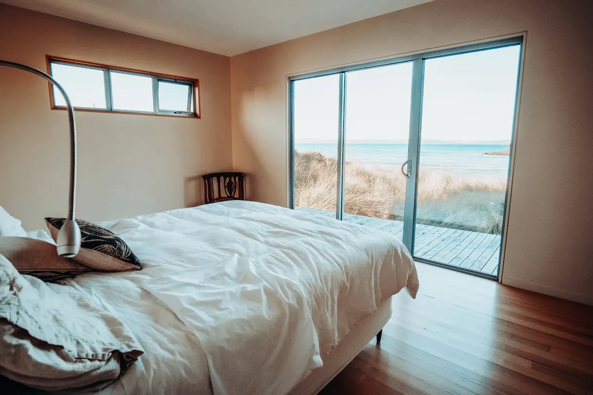
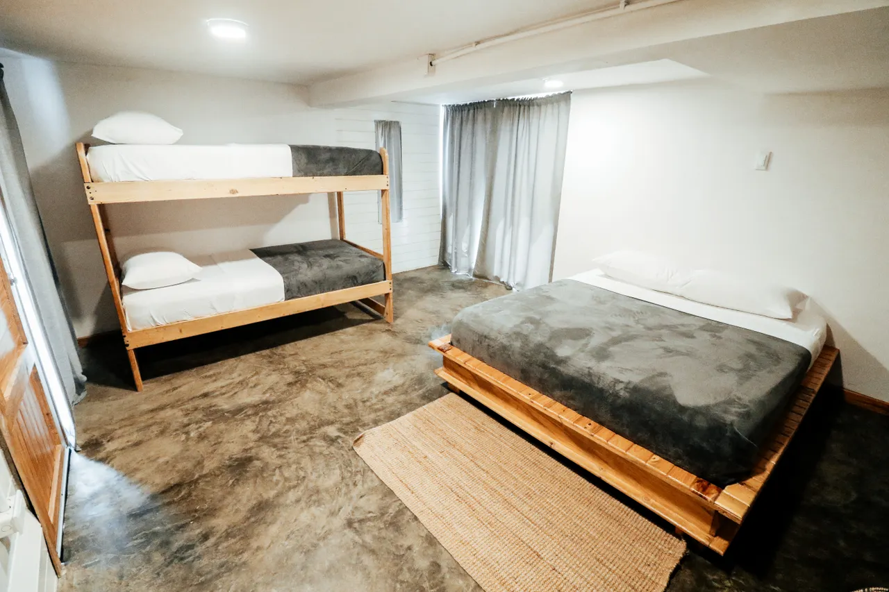
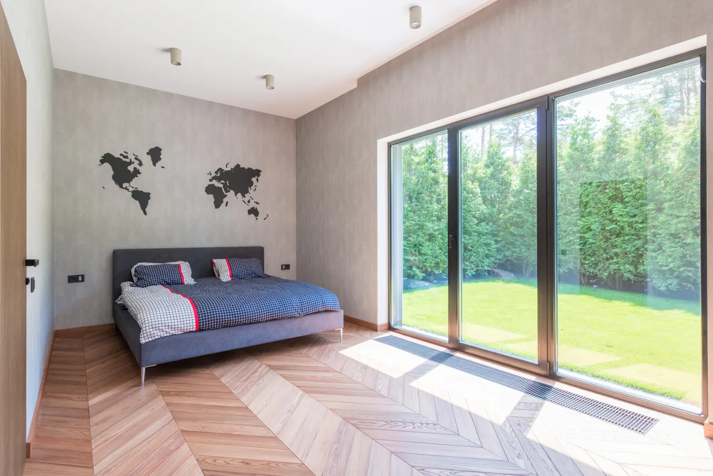

It opens the right page.
A guest asks for a sea view and a dog. Dogs stay in the garden room, so that is the room it shows.
ShowPageRestingIt breathes, and waits for you.
We build websites that answer for your business. An agent on the page shows the room, takes the booking and sends it to you, while you're busy with the guests you already have.



Four things, and each one is something the agent calls, not something we promise.
A guest asks for a sea view and a dog. Dogs stay in the garden room, so that is the room it shows.
ShowPageNo wall of text. The booking comes back as a card you can read at a glance.
ShowCardMay I send it to the owner now?
Nothing leaves the page until the guest says yes. Then you get the request, once.
Offer, then SendLeadTurn any answer over. You see what it called, how long it took and what it cost.
the usage ledgerMade-up businesses, real agents. Each one is a recorded run you can watch, then try yourself.
louis-agent is our own framework, in C#. It runs on your own hardware or in your own cloud account, with the model you pick.
Every card on the site can be picked by a visitor and shown by the agent, and the two never look alike. Try it: press a card anywhere on this page, or a button over the bar.
Nothing marks it. It is a pane of frosted glass: what stands behind it shows through, blurred.
A dashed white edge, and the offer to ask about it.
A solid white ring. A white chip over the bar names it, and your next question is about it.
A violet ring with a light running round it. The page dims, and the agent's words stand beside it.
A ball of violet glass with the l of louis cut into it. It is the agent, and everything on the page is glass like it.
You don't remember a company. You remember the thing you talked to.
So the mark is the agent itself. It sits in the bar at the foot of every page, it stands beside the agent's words, it is the o in our name, and it is the same ball on a tab, an icon and a terminal. The l is the very letter from our name, with its small curl at the foot, set into the glass in white with a fine violet rim, so it belongs to the ball and never fades into its light.
One ball, lit from the top left. The l is the letter from the name's own face, set in the middle, a little under half the ball's height. It is white, with a thin rim of the ball's deepest violet round it and a slightly deeper well of glass behind it, so it stays white wherever the ball is bright. The gloss ends in a hard edge across the upper half, and the glint sits up and left, off the letter.
Purple is never a flat fill. It is always a light: it runs from white through violet into the dark, the way it does in our diagrams. Press the dots at the right edge to try the five purples on the whole page.
Ask the website.
Geist, heavy and tight for headings, plain for reading. Geist Mono for what the agent called, and nowhere else.
ShowPage /rooms/garden · 2.1 s